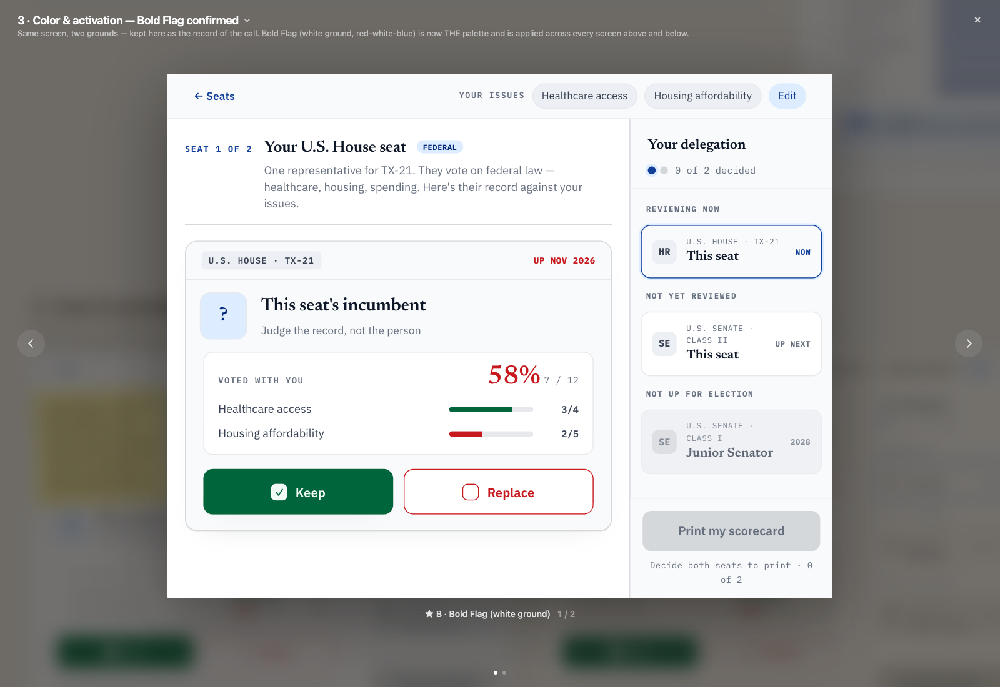
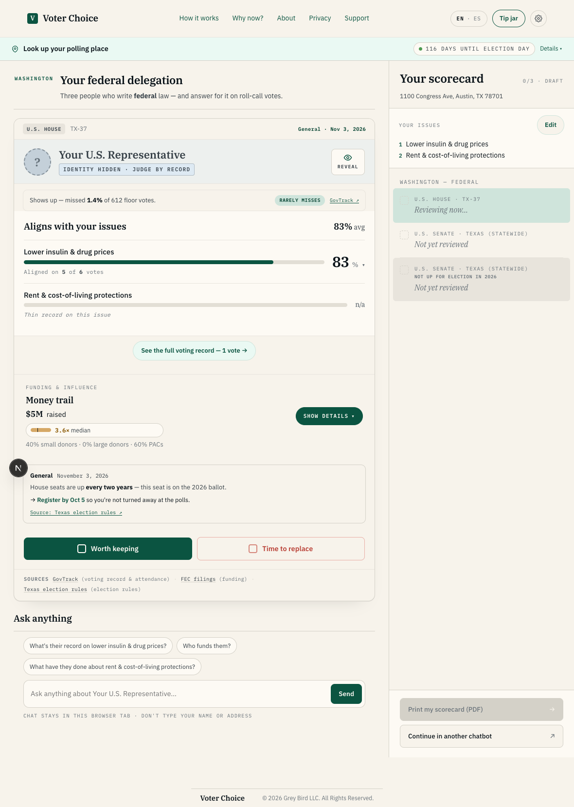

HEAD (71b432af) · generated 2026-07-10T04:48:58.015Z| Scenario | Reference artboard | Repo (HEAD (71b432af)) |
|---|---|---|
|
03-color-bold-flag
Color — Bold Flag palette confirmation
unchanged since base
proxy
The canvas artboard is a trimmed side-by-side palette-demo card, not a real app screen — there is no equivalent standalone surface in the repo. Proxy: the results workspace screenshot (02a), which is where the Bold Flag tokens are actually applied in the live app; use it to eyeball the same --brand/--keep/--replace/--gold values.
|
 |
 |